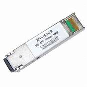

XFP(DWDM XFP/CWDM XFP/XFP)

* Duplex LC Connector
* Support hot-pluggable
* Metal with lower EMI
* Excellent ESD protection
* XFP MSA compliant
* RoHS Compliant and Lead-Free
* Compliant with IEEE 802.3ae
* ITU-T G.959,G.691 compliant
* GR-253-CORE compliant
Part No. |
Package |
Data Rate |
Tx(nm) |
Pout(dBm) |
Rx |
Sensitivity |
Temp |
Reach |
Other Option |
XFP |
10G |
|
0~4 |
|
<-24 |
0~70℃ |
80km |
DDM |
|
XFP |
10G |
|
-1~3 |
|
<-16 |
0~70℃ |
40km |
DDM |
|
XFP |
10G |
|
-6~0.5 |
|
<-14.4 |
-40℃~85℃ |
10km |
DDM |
|
XFP |
10G |
|
-7.3~-1 |
|
<-9.9 |
-5℃~70℃ |
300meters |
DDM |